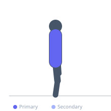

Exercise guide / Thoracic Extension over Foam Roller
Thoracic Extension over Foam Roller
A thoracic spine extension mobilization exercise using a foam roller positioned perpendicular to the spine. The exerciser places the roller under the mid-back and allows gravity to extend the thoracic spine over the roller, progressively working segment-by-segment from the mid-thoracic region toward the upper thoracic. This technique counters the thoracic kyphosis that develops from prolonged sitting and desk work, restoring extension range to the facet joints and improving shoulder overhead mobility.
Primary muscles
erector spinae
pectoralis major sternal
Secondary muscles
pectoralis minor
Equipment
No Equipment (Bodyweight)


Starting position
- Sit on the floor in front of a foam roller positioned perpendicular to the spine. Lie back so the roller contacts the mid-thoracic spine (approximately bra-line level). Support the head with both hands, elbows pointing upward.
Setup
- Use a standard cylindrical foam roller. For a softer initial experience, use a half-roller with the flat side down. Avoid placing the roller directly under the lumbar spine.
Steps
- Step 1: Position the roller under the mid-thoracic spine. Support the head with both hands.
- Step 2: Allow the upper body to extend backward over the roller for 20-30 seconds, using gravity to mobilize that segment.
- Step 3: Curl up slightly, then shift the roller one segment higher toward the upper thoracic spine.
- Step 4: Extend over the roller again. Work progressively from mid- to upper-thoracic over several positions.
Coaching cues
- Let gravity do the work — do not actively push into the roller
- Breathe out completely to sink further into extension with each exhale
- Support the head — do not let the neck extend excessively
Breathing
- Breathe deeply during each extension position. Inhale through the nose, exhale completely — this helps relax the chest and increase extension on each breath.
Range of motion
- Work only within comfortable extension range. The sensation should be one of opening and release, not pain.
Tempo
- 20-30 seconds per thoracic level. 4-6 levels from mid- to upper-thoracic per session.
Common mistakes
- Placing the roller under the lower back — the lumbar spine should not be extended over a hard roller
- Holding breath during the extension position — continuous breathing is essential for relaxation and progress
- Moving too quickly through each position — spend at least 20-30 seconds at each thoracic level
Safety
- If sharp pain occurs at any point, stop and do not force the extension
- Osteoporosis or vertebral fracture history — consult a physiotherapist before attempting this mobilization
Training
- mobility: 1–3 reps
- mobility: 1–2 sets
- Rest: {'mobility': 30}